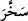
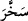
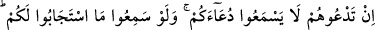

Bahru’l-ulûm’da der ki, Allah’ın güneş ve ayı emri altına almış olmanın mânâsı,
onları insanlara faydalı kılmasıdır. Çünkü insanlar onların seyir ve devrânıyla senelerin
sayısını ve hesabı bilirler. Fakir (Bursevî) der ki: geceyi gündüze gündüzü de geceye
sokmanın hikmeti işte buradan bilinir. Zira güneş ve ayın hareketleriyle vakitler değişir.
Bir çok mühim işlerin ve insanların maslahatlarının kendisine bağlı olduğu dört mevsim
ortaya çıkar. Burada “emri altına aldı” anlamındaki “__WORD__ fiili, sokar, koyar
anlamındaki “__WORD__ fiiline matuftur. Gece ile gündüzün değişmesinde “__WORD__ yâni muzari;
güneş ve ayın hareketlerinde ise “__WORD__ yâni mazi şeklinde farklı sığa kullanılmasının
sebebi şudur: Geceyle gündüzden birini diğerine sokmak an be an değişen ve yenilenen
bir durumdur. Güneş ve ayı emri altına almış olmakta ise böyle bir çoğalma, değişme ve
yenilenme yoktur. Burada değişen, emri altına almış olmanın bir eser ve neticesidir. Şu
âyet buna işâret eder:
“Her biri belirtilmiş bir süreye kadar akıp gider.”
Yâni özel hareketi gereği ve senenin günlerinin sayısına göre dâimî bir akışla sayılı
günlere göre programlanmış olan yörüngesindeki hareketiyle “Her biri belirtilmiş bir
süreye,” Allah Teâlâ’nın güneş ve ay için tayin ve takdir ettiği muayyen zamana “kadar
akıp gider” ki bu zaman kıyâmet günüdür. Kıyâmet kopunca artık güneş ve ayın akıp
gitmeleri de kesilmiş olacaktır. Bazıları der ki, güneş ve ay batıdaki en uzak
menzillerine akıp giderler. Çünkü onlar her gece ayrı bir noktada batarlar. Sonra yine en
yakın menzillerine dönerler. Güneş ve ayın cereyan etmeleri onların yörüngelerinde
kendilerine özel hareket etmeleridir. Belirlenmiş süre ise onların bu devirlerinin son
noktasıdır. Güneşin akış müddeti bir sene, ayın akış müddeti bir aydır. Sene sonu olunca
artık güneşin (bir yıllık) akışı da sona erer. Ay sonu olunca da ayın (bir aylık) akışı son
bulur. Bahru’l-ulûm’da der ki esas mânâ şudur: “Bunlardan her biri tayin edilen zamana
ulaşmak için akıp giderler.”
“İşte” bu hârika sanatları îcâd ve icrâ eden şânı yüce zât, “Rabbiniz Allah’tır. Mülk
O’nundur.” Yâni Allah ulûhiyet, rubûbiyet, göklerde ve yerlerde olanlara mâlikiyet
niteliklerinin sahibidir. O’nu birleyiniz ve O’nun emrine itâat ediniz.
“O’nu bırakıp da kendilerine taptıklarınız ise, bir çekirdek kabuğuna bile sahip
değillerdir.” Kıtmîr, çekirdeğin üzerine sarılmış ince beyaz kabuktur. Çekirdeğin örtüsü
gibidir. Bu kelime bir şeyin az, bayağı ve değersiz olduğunu göstermek için kullanılır.
Çekirdeğin üzerindeki nokta şeklindeki yarık da bunun gibidir. Hurma ağacı bu noktadan
biter, büyür. Yine bu beyaz kabuk (kıtmîr) hurmanın yaprağında bir çizgi ve iplik
halinde bulunan fetile benzetilmiştir. Mânâ şudur: Bunlar size kıtmir kadar en ufak bir
menfaat sağlayamazlar.